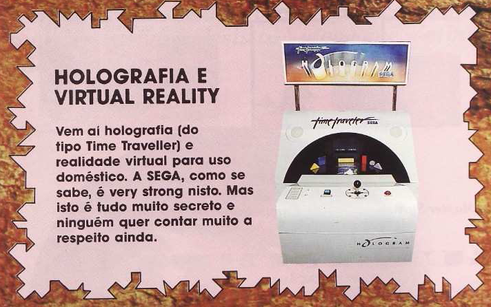
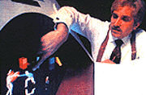
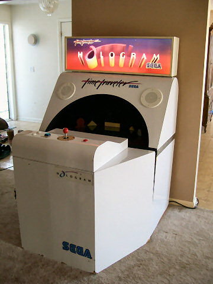
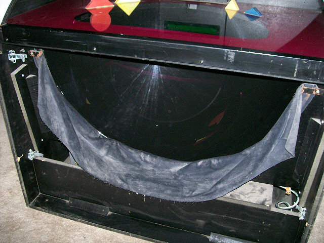
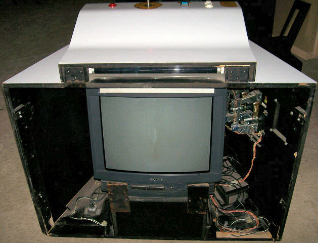

Jogos em holograma - Time Traveler
 :::. Por Gigacom - fonte: Supergame ano 1 nº 11 - Em
tempos onde o hardware, por mais poderoso que ficasse com o passar dos
meses, ainda estava muito longe de poder processar gráficos
complexos envolvendo verdadeiros mundos 3D. Mas a SEGA contornou isso,
e surpreendeu o mundo com Time Traveler.
:::. Por Gigacom - fonte: Supergame ano 1 nº 11 - Em
tempos onde o hardware, por mais poderoso que ficasse com o passar dos
meses, ainda estava muito longe de poder processar gráficos
complexos envolvendo verdadeiros mundos 3D. Mas a SEGA contornou isso,
e surpreendeu o mundo com Time Traveler.
_______________________________________________________________________
Saiu na Supergame a noticia quentissima de um novo arcade capaz de
simular um mundo 3D como nunca antes tinha se visto. A Sega bem que
manteve aquele suspense que ela é mestre em fazer.

Logo que essa maquina foi lançada, não demorou muito e ela apareceu lá em São Paulo e Rio de Janeiro. O jogo era Time Traveler, e a graça de tudo era o gráfico que simulava um ambiente em 3 dimensões, porém com gráficos digitalizados de cenas feitas por atores reais.
A história do jogo é bem basica mesmo. Um vilão sequestra uma princesa, um herói com jeitão de cowboy é contratado para resgatar a menina, e ele tem que viajar por várias épocas atrás da guria e do vilão.
Mas vamos aos detalhes da maquina... inventada pelo tio Rick Dyer (o mesmo criador do fantástico Dragon's Lair, olha a carinha do sujeito ao lado), o arcade era formado por uma TV cuja imagem era refletida por espelhos concavôs gerando uma ilusão de ótica que dava a percepção de profundidade caracteristica de imagens 3D. Os dados do jogo vinham de um Laser Disc, e o jogo na verdade funcionava como esses joguinhos que vem em filmes de DVD hoje em dia.
O arcade era um trambolhão, bastante largo, porém baixinho comparado aos outros arcades comuns. Abaixo você pode conferir algumas fotos mostrando detalhes de uma dessas maquinas que pertence a um colecionador.


O joguinho até que era bom. A jogabilidade não era ruim, os gráficos eram bacaninhas, os efeitos visuais e sonoros muito bons. Tirando uma média, daria um 9 no geral, além do que é uma maquina praticamente única nesse segmento, afinal, logo ficou evidente que o alto custo para se fabricar uma dessas não compensava tanto assim o investimento...
Bem, esse negocinho apareceu lá pelo inicio do ano 1992, em 93 já havia processadores poderosos o suficiente para gerar jogos em 3D que ganharam fama pelo mundo, e pouco depois, em 94, os gamemaníacos já podiam possuir aparelhos poderosos como esse em casa mesmo com o advento do 3DO.
Acesse o Trombone e comente sobre essa matéria!